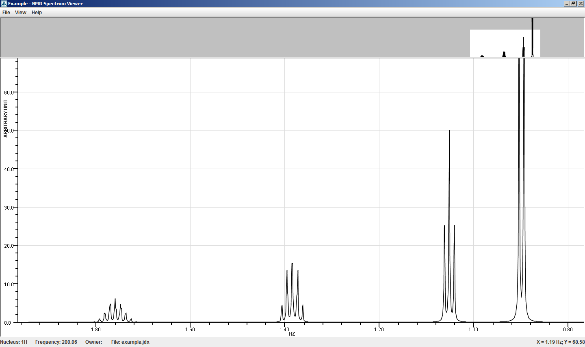

NMR Spectrum Viewer - ChemAxon's tool to view Nuclear Magnetic Resonance spectra
NMR Spectrum Viewer
NMR Spectrum Viewer is able to present Nuclear Magnetic Resonance spectra saved in JCAMP-DX format (*.jdx).

The NMR Spectrum Viewer window consists of the menu and two panels. The title of the file presents at the upper left corner of the window. At the bottom left corner of the status bar general information on the NMR file is shown, i.e., nucleus, frequency, owner, and file name; while at the bottom right corner the coordinates of mouse cursor position can be seen.
NMR Spectrum Viewer Menu
The menu contains File, View, and Help elements.
- File menu:
- Import from JCAMP-DX: Import NMR Spectrum in JCAMP-DX format.
- Exit: Close application.
- View menu:
- Zoom Mode: Set the movement of magnification.
- X-Axis: You can zoom in and out on NMR Spectrum in X-axis direction only.
- Both Axes: You can zoom in and out on NMR Spectrum in both axes coherently.
- Display local maximum places: The imported JCAMP-DX file can contain chemical shift information that can be displayed as spectrum label.
- Zoom In
- Zoom Out
- Reset Zoom
- Help